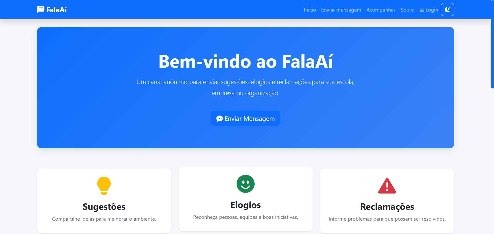

HTML
Estruturação de páginas web por meio de elementos organizados e semânticos.
Conhecimentos básicosSeja bem-vindo(a)!
TECNOLOGIA, DESIGN E CRIATIVIDADE
Estudante de Tecnologia da Informação, interessada em desenvolvimento Front-end, design e criação de conteúdo digital.
Ideias que ganham forma, projetos que geram confiança.
Cada ideia merece um projeto pensado para ela. Com criatividade e propósito, busco transformar referências em soluções que façam sentido.

UM POUCO SOBRE MIM
Meu nome é Rivia Mirelle Rosario Viana, tenho 16 anos e estou cursando o ensino médio técnico na área de Tecnologia da Informação. Gosto de explorar a criatividade por meio do design, da fotografia, da videografia e da criação de conteúdo digital.
Tenho interesse em unir essas áreas ao desenvolvimento Front-end, utilizando a programação para criar sites, interfaces e projetos que combinem funcionalidade e identidade visual. Acredito que o trabalho também deve estar relacionado àquilo que nos motiva a aprender e evoluir.
Quero ampliar meus conhecimentos em design, edição, ferramentas criativas e desenvolvimento web. Busco construir uma trajetória baseada na dedicação, na criatividade e na capacidade de transformar ideias em projetos bem planejados.
CONHECIMENTOS E FERRAMENTAS
Ferramentas que utilizo e conhecimentos que busco aprimorar ao longo da minha formação.
Estruturação de páginas web por meio de elementos organizados e semânticos.
Conhecimentos básicosEstilização de páginas, organização visual e adaptação de interfaces para diferentes telas.
Conhecimentos básicosIntrodução à programação e criação de interações em páginas web.
Em desenvolvimentoCriação de peças visuais, composições gráficas e conteúdos para plataformas digitais.
Tenho familiaridadeExploração de layouts, referências visuais e organização de ideias para interfaces.
Em desenvolvimentoEdição de vídeos, organização de cenas e criação de conteúdo audiovisual.
Tenho familiaridadePRÁTICA E CRIATIVIDADE
A fotografia e a videografia me permitem registrar momentos, experimentar perspectivas e desenvolver meu olhar criativo.
A PORM — Propósito, Ordem, Realização e Movimento — é meu projeto pessoal de criação de conteúdo. Por meio dele, realizo registros de eventos e momentos especiais, buscando valorizar cada experiência a partir de uma perspectiva própria.


PORTFÓLIO DE PROJETOS
Alguns dos projetos que desenvolvi durante minha formação e das experiências com criação digital.

Sistema desenvolvido com foco na organização de atendimentos sociais e no gerenciamento de médicos voluntários.
Acessar projeto
Plataforma de comunicação que permite enviar sugestões, elogios e reclamações de forma anônima para uma organização.
Acessar projeto
Site de uma cafeteria com identidade visual própria, apresentação da marca e navegação organizada para destacar a experiência do cliente.
Acessar projeto
Projeto visual desenvolvido no Figma, com foco na organização dos elementos, na composição da interface e na experiência de quem utiliza.
Acessar projetoCada projeto representa uma oportunidade de aprender, testar ideias e aprimorar meus conhecimentos.
VAMOS CONVERSAR?
Estou aberta a conhecer novas ideias, compartilhar experiências e conversar sobre projetos relacionados a design, criação de conteúdo e tecnologia.
Entre em contato